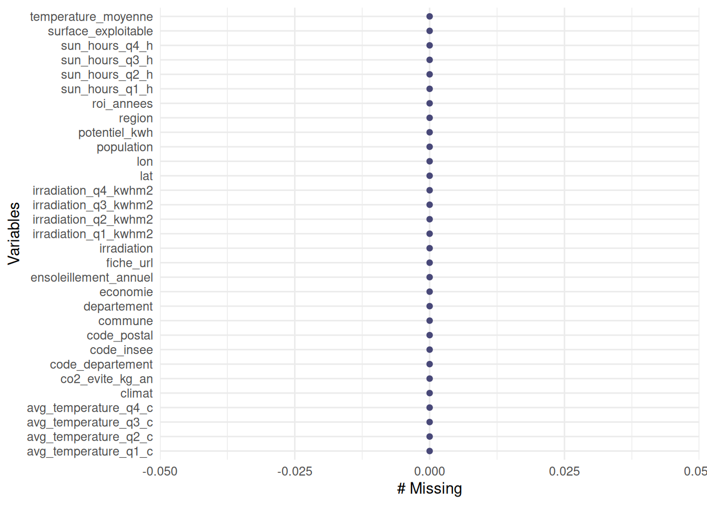
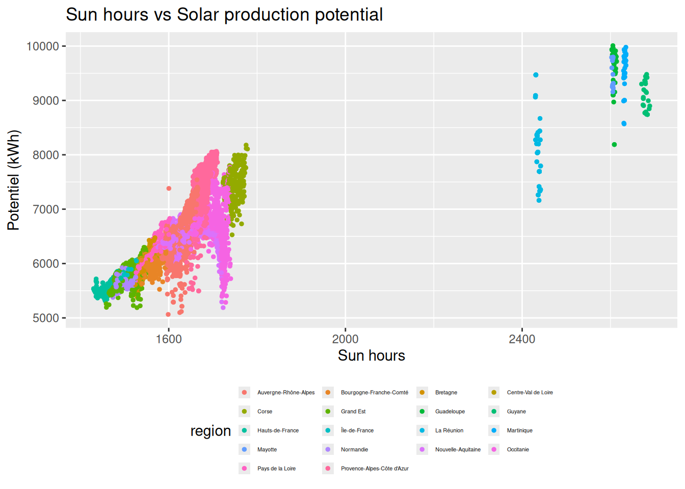
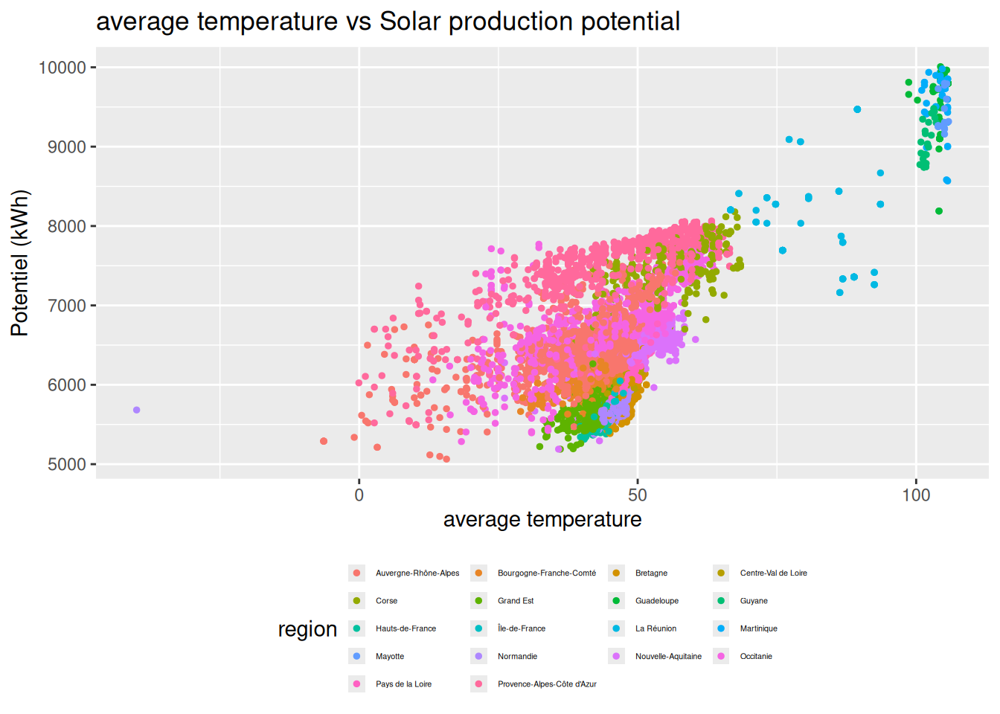
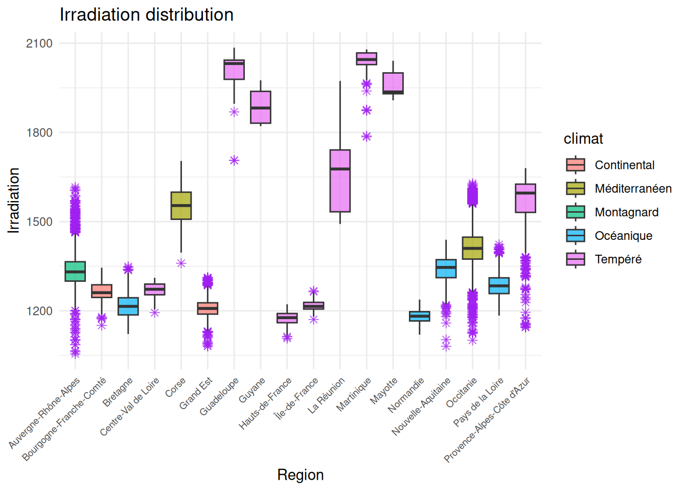
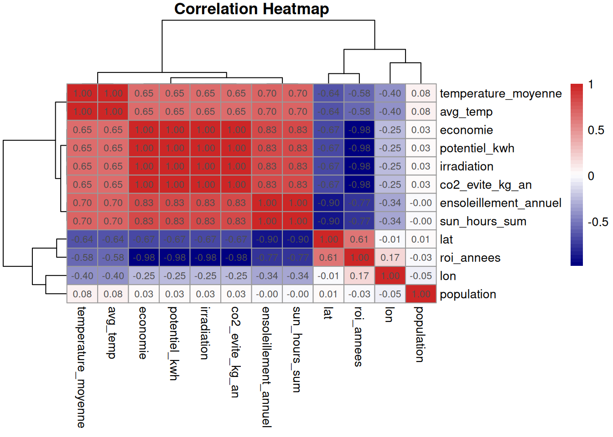

install.packages("rdatagouv")
install.packages("janitor")
install.packages("pheatmap")
library(rdatagouv)
library(janitor)
library(Factoshiny)
install.packages("pins")
library(pins)Chapter 1 · My EDA project
How to fill this chapter in This is your main portfolio piece. The numbered sections below follow the IMRAD structure of research: question ≈ introduction, getting the data + cleaning decisions ≈ methods, plotting the story ≈ results, and findings ≈ discussion. In the Reproducible Workflows course:
- Session 2 lab: find a dataset you care about on an open-data portal (data.gouv.fr or your own country’s), source it reproducibly by code, run an EDA, clean the data, and commit it to git.
- Session 3 work block: finish and polish the chapter, pin your data and environment, open a pull request for review, and publish the book to a URL.
Everything between the
TODOmarkers below is a template to replace with your own content.
The question
what is the dominant factor to effect the potential of photovoltaic power generation?
Getting the data
The data is sourced by code from an open-data portal of your choice. Because the download lives inside the document, it is recorded in the analysis itself; anyone who re-renders this document gets the same data and the same results. Record the dataset’s publisher and URL in the text so the provenance is explicit.
The only portal-specific part is the fetch. This template shows two ways; use the one that fits your portal:
{rdatagouv}(data.gouv.fr only, optional): search/download from R.- Any portal by URL:
download.file()works with any portal’s direct download link.
list1<-rdatagouv::dg_find_datasets(q = "climat", schema_only = TRUE)
list1$id [1] "64cbb61ddb9ea74936fa9b26" "64d6777d9295aa9ef4b04095"
[3] "61b89b81fa74b1c73f4f8065" "6818bce2d9af175f6e01a1b2"
[5] "5eeae71835cd2e8a524fc1c2" "66f12c1ff6d924e7e499798a"
[7] "5970c5a6c751df4c451097fe" "6883cd2b5196629da0088505"
[9] "699cecfff538ccdd0cf1e1b1" "678541d6780940a9f5ba5909"
[11] "6aad0f707f3d039dc8b57730" "698df052b66e138bb93b9eb1"dat<-rdatagouv::dg_pull_dataset("6883cd2b5196629da0088505")
#board <- board_folder("pins/", versioned = TRUE)
#df <- pin_read(board, "my-data")Optionally pin the fetched copy with
{pins}so the chapter reads from a versioned local board instead of hitting the network on every render:
board <- pins::board_folder("pins/", versioned = TRUE)
pins::pin_write(board, dat, "my-data", type = "csv")! The hash of pin "my-data" has not changed.
• Your pin will not be stored.df <- pins::pin_read(board, "my-data")A first look and Cleaning
head(df) code_insee commune code_postal code_departement region
1 33063 Bordeaux 33000 33 Nouvelle-Aquitaine
2 33063 Bordeaux 33100 33 Nouvelle-Aquitaine
3 33063 Bordeaux 33200 33 Nouvelle-Aquitaine
4 33063 Bordeaux 33300 33 Nouvelle-Aquitaine
5 33063 Bordeaux 33800 33 Nouvelle-Aquitaine
6 75115 Paris 15 75015 75 Île-de-France
departement lat lon irradiation irradiation_q1_kwhm2
1 Gironde 44.85724 -0.5736968 1389 218
2 Gironde 44.85724 -0.5736968 1389 218
3 Gironde 44.85724 -0.5736968 1389 218
4 Gironde 44.85724 -0.5736968 1389 218
5 Gironde 44.85724 -0.5736968 1389 218
6 Paris 48.84016 2.2935594 1222 172
irradiation_q2_kwhm2 irradiation_q3_kwhm2 irradiation_q4_kwhm2 sun_hours_q1_h
1 495 498 179 300.38
2 495 498 179 300.38
3 495 498 179 300.38
4 495 498 179 300.38
5 495 498 179 300.38
6 473 444 133 264.34
sun_hours_q2_h sun_hours_q3_h sun_hours_q4_h avg_temperature_q1_c
1 565.89 530.68 259.88 7.61
2 565.89 530.68 259.88 7.61
3 565.89 530.68 259.88 7.61
4 565.89 530.68 259.88 7.61
5 565.89 530.68 259.88 7.61
6 527.79 492.59 222.71 5.41
avg_temperature_q2_c avg_temperature_q3_c avg_temperature_q4_c
1 16.16 20.82 10.83
2 16.16 20.82 10.83
3 16.16 20.82 10.83
4 16.16 20.82 10.83
5 16.16 20.82 10.83
6 14.35 18.68 8.61
surface_exploitable potentiel_kwh economie co2_evite_kg_an roi_annees
1 36 6667 1301 366.696 6.1
2 36 6667 1301 366.696 6.1
3 36 6667 1301 366.696 6.1
4 36 6667 1301 366.696 6.1
5 36 6667 1301 366.696 6.1
6 36 5866 1145 322.608 7.0
population climat ensoleillement_annuel temperature_moyenne
1 261804 Océanique 1657 13.88
2 261804 Océanique 1657 13.88
3 261804 Océanique 1657 13.88
4 261804 Océanique 1657 13.88
5 261804 Océanique 1657 13.88
6 227746 Tempéré 1507 11.79
fiche_url
1 https://solairesimple.fr/region/nouvelle-aquitaine/gironde/bordeaux
2 https://solairesimple.fr/region/nouvelle-aquitaine/gironde/bordeaux
3 https://solairesimple.fr/region/nouvelle-aquitaine/gironde/bordeaux
4 https://solairesimple.fr/region/nouvelle-aquitaine/gironde/bordeaux
5 https://solairesimple.fr/region/nouvelle-aquitaine/gironde/bordeaux
6 https://solairesimple.fr/region/ile-de-france/paris/paris-15df |>
skimr::skim() |>
summary()| Name | df |
| Number of rows | 11769 |
| Number of columns | 31 |
| _______________________ | |
| Column type frequency: | |
| character | 7 |
| numeric | 24 |
| ________________________ | |
| Group variables | None |
A one-line summary of the dataset.
naniar::gg_miss_var(df)
df |> tidyr::drop_na()|> head(5) code_insee commune code_postal code_departement region
1 33063 Bordeaux 33000 33 Nouvelle-Aquitaine
2 33063 Bordeaux 33100 33 Nouvelle-Aquitaine
3 33063 Bordeaux 33200 33 Nouvelle-Aquitaine
4 33063 Bordeaux 33300 33 Nouvelle-Aquitaine
5 33063 Bordeaux 33800 33 Nouvelle-Aquitaine
departement lat lon irradiation irradiation_q1_kwhm2
1 Gironde 44.85724 -0.5736968 1389 218
2 Gironde 44.85724 -0.5736968 1389 218
3 Gironde 44.85724 -0.5736968 1389 218
4 Gironde 44.85724 -0.5736968 1389 218
5 Gironde 44.85724 -0.5736968 1389 218
irradiation_q2_kwhm2 irradiation_q3_kwhm2 irradiation_q4_kwhm2 sun_hours_q1_h
1 495 498 179 300.38
2 495 498 179 300.38
3 495 498 179 300.38
4 495 498 179 300.38
5 495 498 179 300.38
sun_hours_q2_h sun_hours_q3_h sun_hours_q4_h avg_temperature_q1_c
1 565.89 530.68 259.88 7.61
2 565.89 530.68 259.88 7.61
3 565.89 530.68 259.88 7.61
4 565.89 530.68 259.88 7.61
5 565.89 530.68 259.88 7.61
avg_temperature_q2_c avg_temperature_q3_c avg_temperature_q4_c
1 16.16 20.82 10.83
2 16.16 20.82 10.83
3 16.16 20.82 10.83
4 16.16 20.82 10.83
5 16.16 20.82 10.83
surface_exploitable potentiel_kwh economie co2_evite_kg_an roi_annees
1 36 6667 1301 366.696 6.1
2 36 6667 1301 366.696 6.1
3 36 6667 1301 366.696 6.1
4 36 6667 1301 366.696 6.1
5 36 6667 1301 366.696 6.1
population climat ensoleillement_annuel temperature_moyenne
1 261804 Océanique 1657 13.88
2 261804 Océanique 1657 13.88
3 261804 Océanique 1657 13.88
4 261804 Océanique 1657 13.88
5 261804 Océanique 1657 13.88
fiche_url
1 https://solairesimple.fr/region/nouvelle-aquitaine/gironde/bordeaux
2 https://solairesimple.fr/region/nouvelle-aquitaine/gironde/bordeaux
3 https://solairesimple.fr/region/nouvelle-aquitaine/gironde/bordeaux
4 https://solairesimple.fr/region/nouvelle-aquitaine/gironde/bordeaux
5 https://solairesimple.fr/region/nouvelle-aquitaine/gironde/bordeauxcolnames(df)<-df |> clean_names() |> names()
df|> tabyl(region) region n percent
Auvergne-Rhône-Alpes 1855 0.157617470
Bourgogne-Franche-Comté 847 0.071968731
Bretagne 426 0.036196788
Centre-Val de Loire 606 0.051491206
Corse 229 0.019457898
Grand Est 1098 0.093295947
Guadeloupe 66 0.005607953
Guyane 25 0.002124225
Hauts-de-France 1241 0.105446512
La Réunion 85 0.007222364
Martinique 86 0.007307333
Mayotte 21 0.001784349
Normandie 598 0.050811454
Nouvelle-Aquitaine 1247 0.105956326
Occitanie 1358 0.115387883
Pays de la Loire 583 0.049536919
Provence-Alpes-Côte d'Azur 827 0.070269352
Île-de-France 571 0.048517291dim(df)[1] 11769 31library(dplyr)
df<-df|>mutate(sun_hours_sum=sun_hours_q1_h+sun_hours_q2_h+sun_hours_q3_h+sun_hours_q4_h)
df<-df|>mutate(avg_temp=avg_temperature_q1_c+avg_temperature_q2_c+avg_temperature_q3_c+avg_temperature_q4_c)
colSums(is.na(df)) code_insee commune code_postal
0 0 0
code_departement region departement
0 0 0
lat lon irradiation
0 0 0
irradiation_q1_kwhm2 irradiation_q2_kwhm2 irradiation_q3_kwhm2
0 0 0
irradiation_q4_kwhm2 sun_hours_q1_h sun_hours_q2_h
0 0 0
sun_hours_q3_h sun_hours_q4_h avg_temperature_q1_c
0 0 0
avg_temperature_q2_c avg_temperature_q3_c avg_temperature_q4_c
0 0 0
surface_exploitable potentiel_kwh economie
0 0 0
co2_evite_kg_an roi_annees population
0 0 0
climat ensoleillement_annuel temperature_moyenne
0 0 0
fiche_url sun_hours_sum avg_temp
0 0 0 Plotting the story
library(ggplot2)
ggplot(df, aes(x = sun_hours_sum, y = potentiel_kwh, color = region)) +
geom_point(size = 1) +
labs(title = "Sun hours vs Solar production potential",
x = "Sun hours", y = "Potentiel (kWh)")+
theme(legend.position = "bottom",
legend.text = element_text(size = 4),
legend.key.size = unit(0.3, "cm"),
legend.spacing.x = unit(0.1, "cm"))+
guides(color = guide_legend(nrow = 5, byrow = TRUE))
ggplot(df, aes(x = avg_temp, y = potentiel_kwh, color = region)) +
geom_point(size = 1) +
labs(title = "average temperature vs Solar production potential",
x = "average temperature", y = "Potentiel (kWh)")+
theme(legend.position = "bottom",
legend.text = element_text(size = 4),
legend.key.size = unit(0.3, "cm"),
legend.spacing.x = unit(0.1, "cm"))+
guides(color = guide_legend(nrow = 5, byrow = TRUE))
ggplot(df, aes(x = region, y = irradiation, fill = climat)) +
geom_boxplot(notch = FALSE,
outlier.color = "purple",
outlier.shape = 8,
outlier.size = 2,
alpha = 0.7) +
labs(title = "Irradiation distribution",
x = "Region",
y = "Irradiation") +
theme_minimal() +
theme(
axis.text.x = element_text(angle = 45, hjust = 1, size = 7),
)
library(pheatmap)
num_df <- df[, sapply(df, is.numeric)]
num_df <- num_df[, apply(num_df, 2, function(x) sd(x, na.rm = TRUE) != 0)]
num_df<-num_df[,c(2,3,4,17,18,19,20,21,22,23,24,25)]
cor_mat <- cor(num_df, use = "pairwise.complete.obs")
pheatmap(cor_mat,
cluster_rows = TRUE,
cluster_cols = TRUE,
display_numbers = TRUE,
number_format = "%.2f",
color = colorRampPalette(c("navy", "white", "firebrick3"))(50),
main = "Correlation Heatmap")



Findings
#pca
sapply(df, class) code_insee commune code_postal
"character" "character" "integer"
code_departement region departement
"character" "character" "character"
lat lon irradiation
"numeric" "numeric" "integer"
irradiation_q1_kwhm2 irradiation_q2_kwhm2 irradiation_q3_kwhm2
"integer" "integer" "integer"
irradiation_q4_kwhm2 sun_hours_q1_h sun_hours_q2_h
"integer" "numeric" "numeric"
sun_hours_q3_h sun_hours_q4_h avg_temperature_q1_c
"numeric" "numeric" "numeric"
avg_temperature_q2_c avg_temperature_q3_c avg_temperature_q4_c
"numeric" "numeric" "numeric"
surface_exploitable potentiel_kwh economie
"integer" "integer" "integer"
co2_evite_kg_an roi_annees population
"numeric" "numeric" "integer"
climat ensoleillement_annuel temperature_moyenne
"character" "integer" "numeric"
fiche_url sun_hours_sum avg_temp
"character" "numeric" "numeric" #non_char_df <- df[,!sapply(df, is.character)]
#col_variances <- sapply(non_char_df, var,na.rm=TRUE)
#dynamic_cols <- col_variances > 0 & !is.na(col_variances)
#dfprep<-non_char_df[,dynamic_cols]
#colnames(dfprep)
#PCAshiny(dfprep)
#res.PCA<-PCA(dfprep,quali.sup=c(1,5,6,7,8,9,10,11,12,13,14,15,16),graph=FALSE)
#plot.PCA(res.PCA,choix='var')
#plot.PCA(res.PCA)
#what is the dominant factor to effect the potential of photovoltaic power generation?
colnames(df) [1] "code_insee" "commune" "code_postal"
[4] "code_departement" "region" "departement"
[7] "lat" "lon" "irradiation"
[10] "irradiation_q1_kwhm2" "irradiation_q2_kwhm2" "irradiation_q3_kwhm2"
[13] "irradiation_q4_kwhm2" "sun_hours_q1_h" "sun_hours_q2_h"
[16] "sun_hours_q3_h" "sun_hours_q4_h" "avg_temperature_q1_c"
[19] "avg_temperature_q2_c" "avg_temperature_q3_c" "avg_temperature_q4_c"
[22] "surface_exploitable" "potentiel_kwh" "economie"
[25] "co2_evite_kg_an" "roi_annees" "population"
[28] "climat" "ensoleillement_annuel" "temperature_moyenne"
[31] "fiche_url" "sun_hours_sum" "avg_temp" #climate_vars <- c("temperature_moyenne", "ensoleillement_annuel","irradiation", "sun_hours_sum","climat")
#geo_vars <- c("lat", "lon", "population","region")
#outcome_var <- "potential_kwh"
#benefit_vars <- c("co2_evite_kg_an", "economie","roi_annees")
pca_vars <- c("temperature_moyenne", "irradiation",
"lat", "lon", "population")
supp_vars <- c("potentiel_kwh", "co2_evite_kg_an", "economie")
all_df <- df[, c(pca_vars, supp_vars)]
all_df <- all_df[, apply(all_df, 2, function(x) sd(x, na.rm = TRUE) != 0)]
all_df <- na.omit(all_df)
pca_res <- PCA(all_df,
scale.unit = TRUE,
ncp = 5,
graph = FALSE,
quanti.sup = which(colnames(all_df) %in% supp_vars))
summary(pca_res)
Call:
PCA(X = all_df, scale.unit = TRUE, ncp = 5, quanti.sup = which(colnames(all_df) %in%
supp_vars), graph = FALSE)
Eigenvalues
Dim.1 Dim.2 Dim.3 Dim.4 Dim.5
Variance 2.409 1.065 0.955 0.338 0.233
% of var. 48.171 21.302 19.107 6.752 4.668
Cumulative % of var. 48.171 69.473 88.580 95.332 100.000
Individuals (the 10 first)
Dist Dim.1 ctr cos2 Dim.2 ctr cos2
1 | 21.798 | 1.959 0.014 0.008 | 13.923 1.546 0.408 |
2 | 21.798 | 1.959 0.014 0.008 | 13.923 1.546 0.408 |
3 | 21.798 | 1.959 0.014 0.008 | 13.923 1.546 0.408 |
4 | 21.798 | 1.959 0.014 0.008 | 13.923 1.546 0.408 |
5 | 21.798 | 1.959 0.014 0.008 | 13.923 1.546 0.408 |
6 | 18.930 | 0.410 0.001 0.000 | 12.158 1.179 0.412 |
7 | 15.749 | 0.191 0.000 0.000 | 10.154 0.823 0.416 |
8 | 15.631 | 0.238 0.000 0.000 | 10.079 0.810 0.416 |
9 | 15.059 | 0.186 0.000 0.000 | 9.718 0.753 0.416 |
10 | 14.784 | 0.187 0.000 0.000 | 9.542 0.726 0.417 |
Dim.3 ctr cos2
1 16.627 2.459 0.582 |
2 16.627 2.459 0.582 |
3 16.627 2.459 0.582 |
4 16.627 2.459 0.582 |
5 16.627 2.459 0.582 |
6 14.472 1.863 0.584 |
7 12.010 1.283 0.582 |
8 11.921 1.264 0.582 |
9 11.479 1.172 0.581 |
10 11.268 1.129 0.581 |
Variables
Dim.1 ctr cos2 Dim.2 ctr cos2 Dim.3
temperature_moyenne | 0.894 33.168 0.799 | 0.091 0.785 0.008 | -0.048
irradiation | 0.877 31.930 0.769 | -0.105 1.039 0.011 | 0.037
lat | -0.817 27.740 0.668 | 0.393 14.474 0.154 | -0.225
lon | -0.407 6.890 0.166 | -0.685 44.005 0.469 | 0.576
population | 0.081 0.271 0.007 | 0.650 39.697 0.423 | 0.755
ctr cos2
temperature_moyenne 0.240 0.002 |
irradiation 0.142 0.001 |
lat 5.305 0.051 |
lon 34.689 0.331 |
population 59.625 0.570 |
Supplementary continuous variables
Dim.1 cos2 Dim.2 cos2 Dim.3 cos2
potentiel_kwh | 0.877 0.769 | -0.105 0.011 | 0.037 0.001 |
co2_evite_kg_an | 0.877 0.769 | -0.105 0.011 | 0.037 0.001 |
economie | 0.877 0.769 | -0.105 0.011 | 0.037 0.001 |round(pca_res$quanti.sup$cor[, 1:3], 2) Dim.1 Dim.2 Dim.3
potentiel_kwh 0.88 -0.11 0.04
co2_evite_kg_an 0.88 -0.11 0.04
economie 0.88 -0.11 0.04The dominant factors for photovoltaic power generation potential are temperature and irradiation. Dim.1 explains 48.2% of the variance, while temperature (loading 0.894)and radiation (loading 0.877) drives positively and the latitude (loading -0.817) drives negatively.The correlation coefficient between potentiel_kwh and Dim.1 is 0.88 which means the potentiel_kwh is determined by Dim.1. So the key point to improve potentiel_kwh is the temperature and irradation, and the region in high latitude has lower potential.
References
Wickham, Hadley, and Garrett Grolemund. 2017. R for Data Science. O’Reilly Media. https://r4ds.hadley.nz.